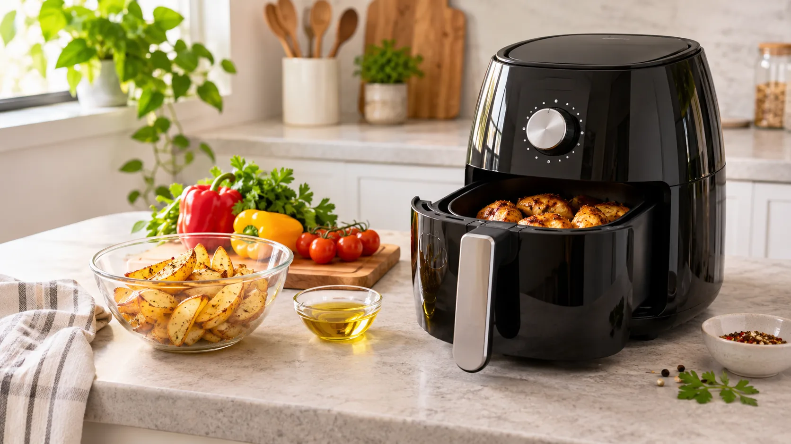
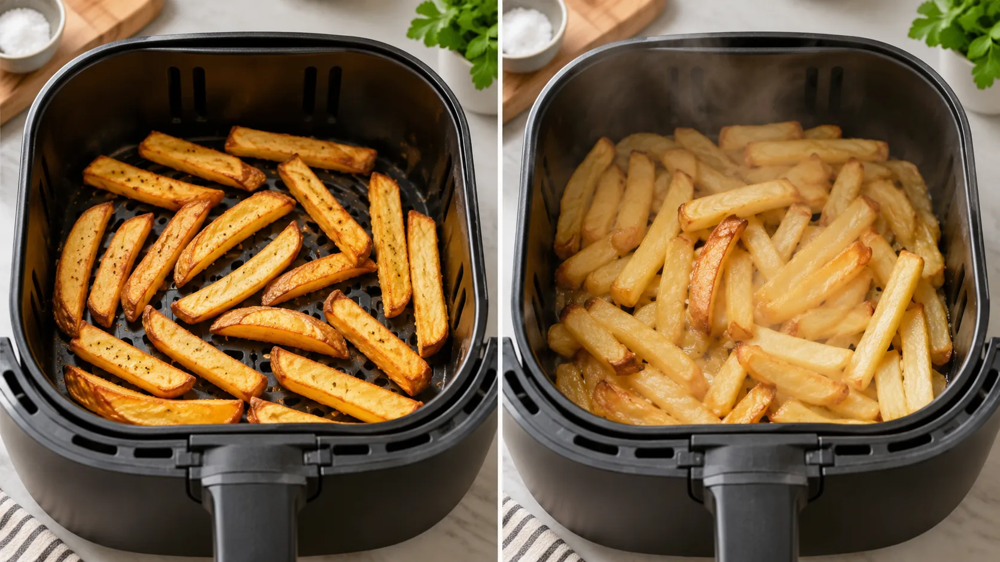
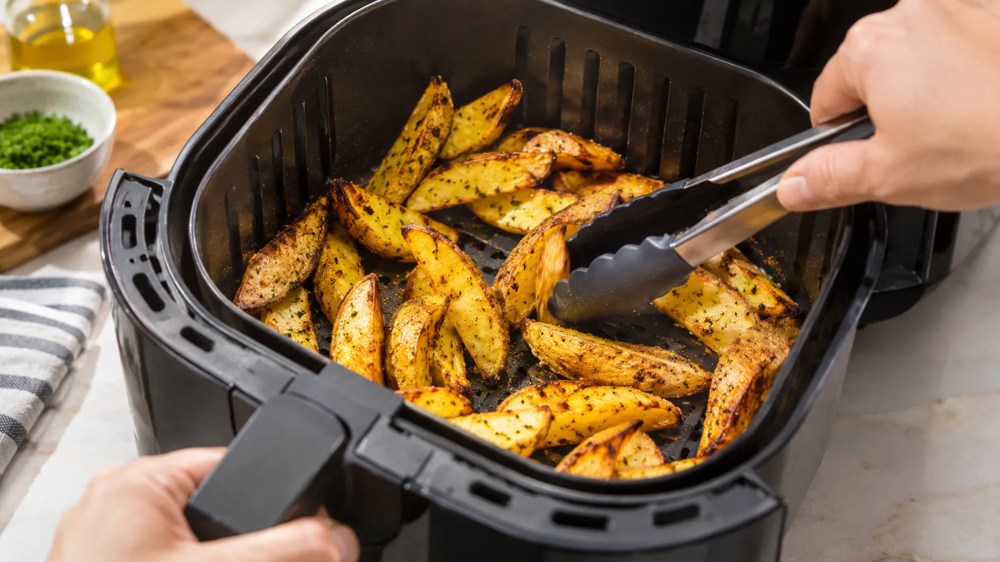
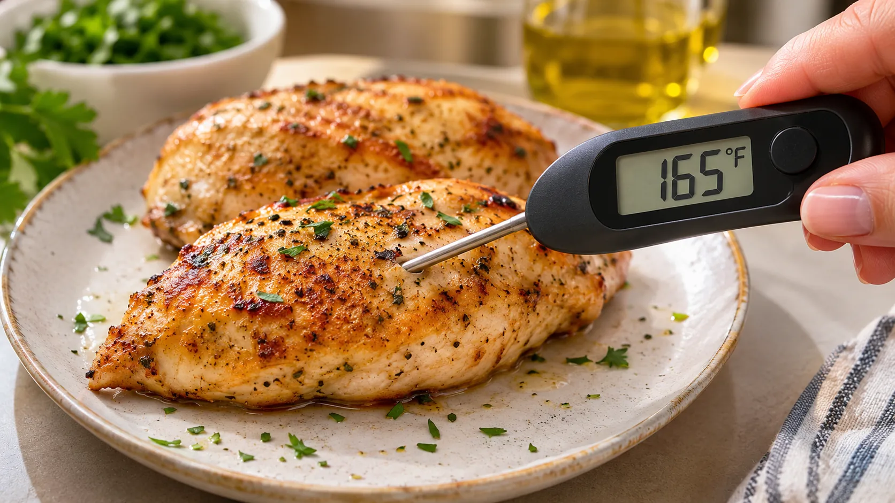

Your first air fryer doesn't need to be intimidating. Here's a straightforward guide to getting started, making food crispier, avoiding common mistakes, and knowing when dinner is actually done.

Your first air fryer meal: step by step
↑ CategoriesFollow this sequence the first few times you cook. Once you're comfortable with your appliance, you can experiment with different foods and techniques.
Get familiar with your air fryer
Identify the basket or tray, controls, air vents, and removable parts. Read the manufacturer's manual before first use. Wash removable parts as directed, dry thoroughly, and position the appliance on a stable, heat-resistant surface with the clearance specified in the manual.
Start with an easy food
Frozen fries, broccoli florets, or potato wedges are straightforward first projects. Pick one food and follow a trusted recipe or the package directions if they specifically include air-fryer instructions.
Decide whether to preheat
Some models or recipes recommend preheating; others don't require it. Follow your model's instructions rather than automatically adding a fixed number of minutes. If you preheat, account for that in the cooking process.
Prepare food for crisping
Pat wet ingredients dry, cut pieces to similar sizes, and lightly coat suitable foods with oil if desired. Avoid pouring oil into the cooking chamber or using more oil than needed.
Leave room for circulating air
Spread food so hot air can reach its surfaces. A crowded basket often leads to uneven or soggy results. Cook in smaller batches when needed.
Set the temperature and start checking
Use a recipe or food-specific chart as a starting point. Cooking time changes with thickness, food temperature, basket size, and the appliance. Begin checking before the estimated finish time.
Shake or turn halfway through
For fries, vegetables, and bite-size pieces, carefully shake or turn partway through cooking. Use tongs for larger or delicate foods and avoid touching hot surfaces.
Check doneness and serve safely
Use a food thermometer for meat, poultry, and seafood. Let the basket cool before cleaning, and use heat-safe tools or oven mitts when removing hot food.

Six habits that make a difference
Give food breathing room
Hot air needs space to circulate. For crispier results, arrange food in a single layer when possible instead of packing the basket tightly.
Dry wet surfaces
Excess moisture creates steam, which slows browning. Pat rinsed vegetables and marinated ingredients dry where appropriate.
Use a little oil when helpful
Some vegetables and homemade fries benefit from a light coating. Many frozen foods already contain oil and may not need more.
Turn food as it cooks
Shaking fries or flipping larger pieces midway can help both sides brown evenly. Handle the basket carefully; it may contain hot fat.
Don't trust the clock alone
Appliances and portion sizes vary. Check food early, add time in short increments, and use a thermometer where food safety requires one.
Keep the basket clean
Crumbs and grease can create smoke or unwanted flavors. Let the appliance cool, then clean the removable parts as the manual directs.

Common problems and quick fixes
↑ CategoriesMy fries aren't crispy.
Try a smaller batch, remove excess moisture, and shake partway through. Frozen fries may already have sufficient oil.
Food is brown outside but undercooked inside.
Lower the temperature slightly and cook longer, checking the center. For meat or poultry, confirm a safe internal temperature with a thermometer.
Food is cooking unevenly.
Cut pieces to a similar thickness, spread them more evenly, and flip or shake when appropriate.
My air fryer is smoking.
Stop cooking if smoke is excessive. After safely switching it off and letting it cool, check for spilled grease, food residue, and loose lightweight materials. Follow the appliance manual for troubleshooting.
Food is sticking.
Make sure the basket is clean and its surface isn't damaged. A small amount of cooking oil may help, depending on the food and basket instructions.
My food gets dry.
Start checking earlier, reduce time or temperature as needed, and avoid using times intended for much thicker pieces.
Food safety: the temperatures that matter
↑ CategoriesA browned exterior doesn't prove the inside is safe. Insert a food thermometer into the thickest part, away from bone, and follow applicable food-safety guidance.

| Food | Internal temperature |
|---|---|
| Chicken, turkey and other poultry | 165°F (74°C) |
| Ground beef, pork, veal or lamb | 160°F (71°C) |
| Whole cuts of beef, pork, veal and lamb | 145°F (63°C), then rest 3 minutes |
| Fish | 145°F (63°C) |
| Leftovers | 165°F (74°C) |
See FoodSafety.gov's safe temperature chart for more foods and specific circumstances.
Frequently asked questions
Do I always need to preheat an air fryer?
No universal rule applies. Some models and recipes recommend preheating, while others are designed to start cold. Check your appliance's instructions and the recipe you're following.
Do I need oil to air fry?
Not always. Many frozen foods have oil already; some fresh foods benefit from a small amount. Never fill an air fryer with oil like a deep fryer.
Can I use parchment paper or aluminum foil?
Only if your particular model allows it, and only as instructed. Loose liners can block airflow or contact the heating element; never preheat with unsecured paper inside.
Can I cook frozen foods without thawing them?
Often, yes. Check the food package for air-fryer instructions and make sure any raw food reaches a safe internal temperature.
Where do I find specific cooking times?
Use our Air Fryer Cooking Times & Temperatures Guide to look up starting temperatures, times and portion sizes by food.
Further reading: Philips Airfryer usage tips and FoodSafety.gov cooking temperatures. Specific controls and handling instructions vary by model.